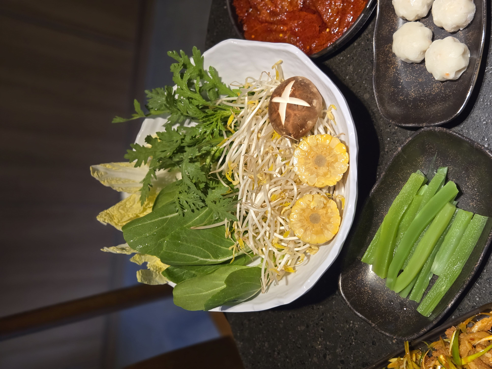
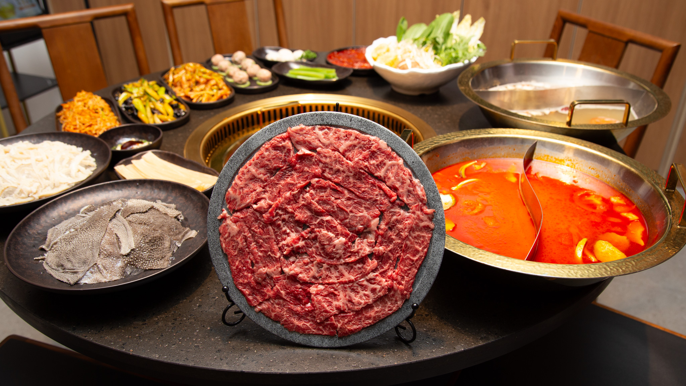
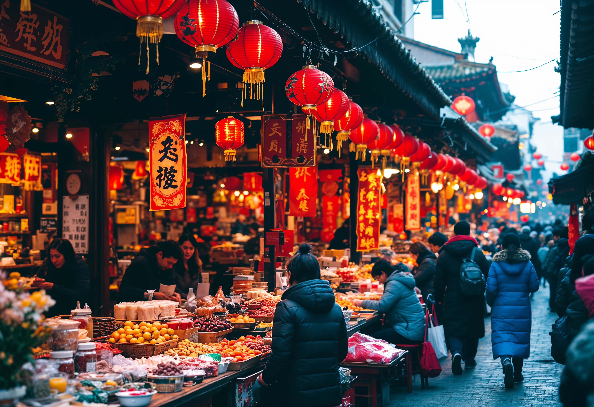
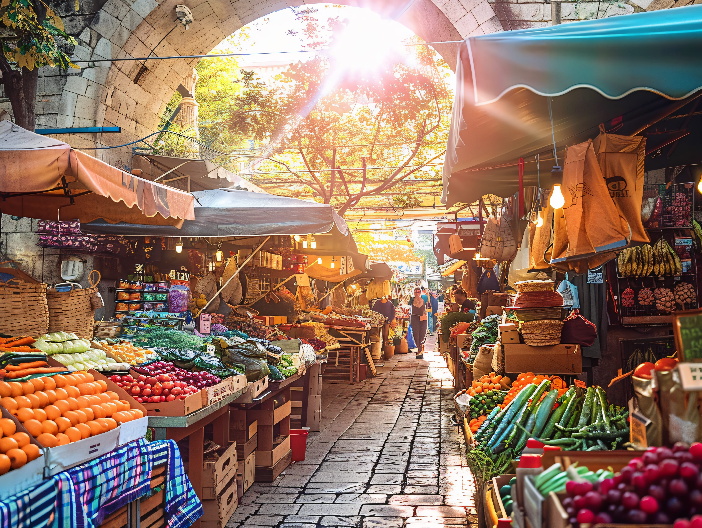
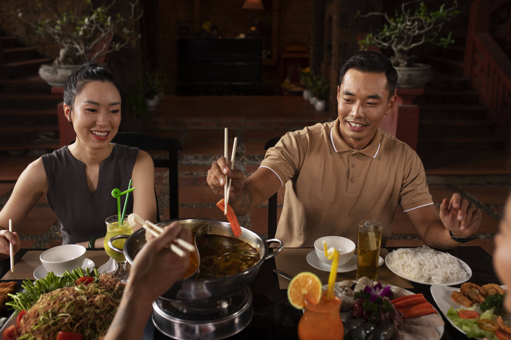
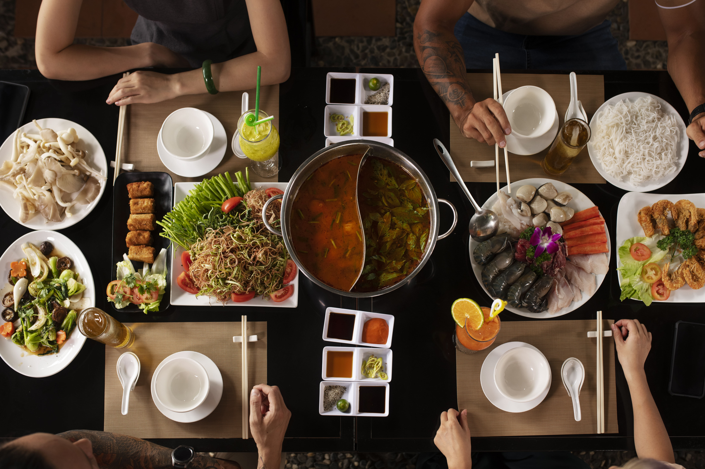
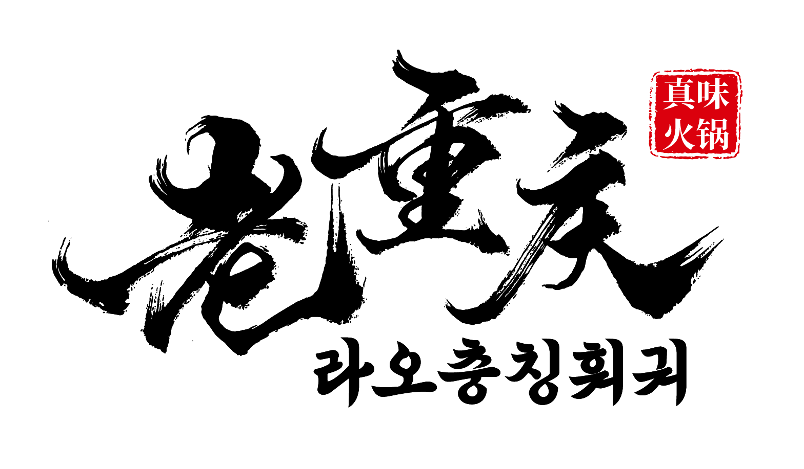
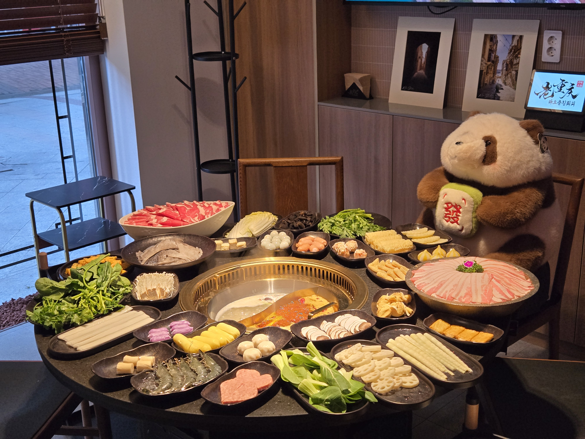

훠궈의 시작과 끝은 재료입니다. 라오충칭훠궈는 깊고 진한 맛의 근원을 좋은 재료에서 찾고, 고객에게 정직한 한 끼를 전하는 것을 가장 중요한 약속으로 삼고 있습니다.
국물의 깊이를 만드는 재료
국산 소고기, 신선한 채소, 다양한 버섯은 국물의 향과 층위를 쌓아 올리는 핵심입니다. 표고의 진한 향, 팽이의 담백한 식감, 느타리의 부드러움이 한 냄비에서 만나 겹겹이 쌓이는 깊이를 완성합니다.


건강과 전통을 함께 담다
좋은 재료는 곧 건강과 연결됩니다. 오랜 전통 속에서 훠궈는 보양식으로 자리해 왔고, 현대 영양학적으로도 버섯과 신선한 채소는 항산화와 식이섬유를 제공합니다. 라오충칭훠궈는 원재료의 출처와 품질을 투명하게 관리합니다.


사람과 사람을 잇는 조화
훠궈는 함께할 때 가장 즐겁습니다. 다양한 재료가 한 냄비에서 어우러지듯, 한 테이블에 모인 사람들 사이에 따뜻한 이야기가 흐릅니다. 라오충칭훠궈는 음식 이상의 관계를 지향합니다.


“좋은 재료 없이는 좋은 훠궈도 없다.” – 라오충칭훠궈의 변함없는 원칙
라오충칭훠궈의 약속
우리는 오늘도 신뢰할 수 있는 재료로 건강한 식탁을 만들고, 고객의 시간을 더 가치 있게 만듭니다. 한 숟갈의 국물에서 시작된 진심이 테이블 전체로 번져가는 경험, 그것이 우리가 꿈꾸는 식사입니다.

